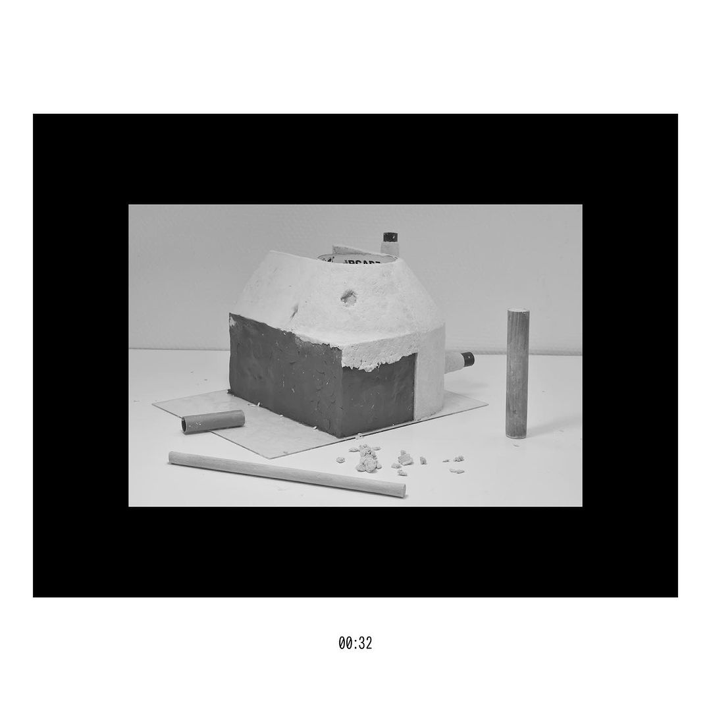

March 13, 2024 | Suhwan Jeong
철학에서 충분성의 개념은 정의, 도덕성, 복지에 관한 다양한 논쟁과 주로 연결되어 있다. 철학에서 충분성에 대한 일반적 해석 중 하나는 도덕적으로 중요한 것은 모든 사람이 동일하게 가지거나 동등하게 대우받는 것이 아니라 모든 사람이 충분히 소유하도록 보장한 것임을 강조한다. 즉, 충분하다는 일반적으로 품위 있거나 수용 가능하다고 여겨지는 정도의 삶의 질을 허용하는 자원 혹은 복지 수준을 의미한다. 조금 자세히 살펴보면, 윤리적으로는 존엄성에 필요한 최소 수준의 자원이나 복지를 탐구하고 '충분함'의 정확한 본질과 모든 사람이 이를 달성하도록 보장하는 방법에 대해 토론하는 해리 프랑크푸르트(Harry Frankfurt)의 관점과 같은 철학자가 있다. 정치적으로는 존 롤스(John Rawls) 및 아마르티아 센(Amartya Sen)과 같은 사상가의 영향을 받아 구조와 정책이 시민에게 사회에 완전히 참여할 수 있는 충분한 자원을 제공할 수 있는 방법을 검토하고 의료 및 교육과 같은 사회 안전망에 대한 논의를 촉발한다. 형이상학에서 충분성은 존재와 사건의 이유에 대해 의문을 제기하며, 라이프니츠와 같은 철학자는 우주의 기본 원리를 숙고한다. 그러나 이렇게 수많은 학자들의 고민과 논의에도 불구하고 충분함의 정확한 정도는 철학자들의 관점마다 달랐다고 한다. 많은 개념들이 그렇듯, 충분함 역시도 어느 정도인지에 대해선 시대마다, 상황마다 다른 나머지 합의를 내리긴 어려운 모양이다.
개인적인 의미에서 내가 느끼는 충분성에 대해 이야기해보자면, 난 많은 일에서 극단적인 관점을 가지지는 않는 사람이다. 나에게 충분함이란, 특히 디자인을 공부하면서 느끼는 점은(이 프로젝트 저 프로젝트를 정신적으로 옮겨 다니는 작업의 특징에서 비롯된 것일지?) 항상 그때그때 나름의 기준에서 충분하다고 여겨지는 정도를 찾기 위해 모호함 속을 헤매며 무언가를 겨우 잡았다가 다음 순간에는 도로 붙잡은 걸 놓치는 일의 반복이라는 것이다. 프로젝트의 조건에 따라 어떤 때는 아무리 애를 써도 아쉽고 부족한 점들이 드러나는 반면 어떤 순간은 프로젝트가 필요하는 것 이상으로 과다한 노력을 했다가 필요 없는 작업들이 되기도 한다. 프로젝트뿐 아니라 일상적인 순간들에서도 어떤 때는 아주 보잘것없다고 여겨지는 것들에 충분함을 느끼고, 어떤 때는 이룰 거라고 생각도 못한 성취에도 만족하지 못하고 새로운 갈증이 생기곤 한다.
충분함이란 말은 그 자체로 어떤 절대적인 수치를 가진 개념은 아닌 것 같다. 그렇다고 그건 너의 마음먹기 달렸다, 보는 시각에 달렸다라는 식의 쉬운 얼버무림으로도 어쩐지 납득되지 않는 개념인 것 같다. 이 정도면 충분해, 라고 생각해보려 한들 뭔가 모자라거나 과하다고 여겨지는 모든 것들이 한순간에 이 정도면 충분하다고 여겨지지는 않는다. 모든 상황과 시간마다 그 규모나 깊이와는 전혀 다르게, 언제나 예외적인 기준만을 가지는 이상한 상태가 충분함이 아닐까? 이런 변덕스러운 충분함 앞에서 우리가 할 수 있는 것은 무엇일까? 행복과도 비슷하게, 우리는 언제나 충분할 수는 없다는 사실을 인정해야 할까? 변덕스러운 충분을 성급히 채우려 버둥대는 것이 아니라, 불완전했다가 온전해지기도 하는 우리 삶의 여러 과정들을 온전히 즐길 수 있는 마음가짐을 가지고 싶다는 생각이 든다.